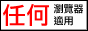

小按钮与素材
就是页脚那一排小图。欢迎交换——把你的按钮拿去用、把你的贴过来都行。
这一页也顺便记下这些素材是哪来的、能不能商用，免得以后忘了。
[编辑]本站按钮¶

直接复制这段贴到你自己的页面里就行：
<a href="https://flygon611.github.io/Wiki_for_flygonish/">
<img src="https://flygon611.github.io/Wiki_for_flygonish/assets/buttons/见远观星集.png"
width="88" height="31" alt="见远观星集">
</a>想在别处用普通尺寸的大图，用这张（1200×630，链接卡片也是它）：
<img src="https://flygon611.github.io/Wiki_for_flygonish/assets/og-cover.png" width="600" alt="见远观星集">[编辑]页脚其它按钮¶
下面这些是自己画的，没有版权问题，随便改：
| 按钮 | 说明 |
|---|---|
| SINCE 2010 · 手写 HTML | |
| 那个年代的标准配置 | |
| 无框架 · 无广告 | |
| 此站由 人手绘 | |
| 生成器是 Python 写的 | |
| EST. 2010 |
改文字、改配色、加新按钮：编辑 tools/make_buttons.py 里的 BUTTONS 那张表，然后
python3 tools/make_buttons.py会重新生成到 assets/buttons/，88×31 的 PNG。
[编辑]「任何瀏覽器適用」按钮¶

这张不是我们画的，来自 Viewable with Any Browser 运动（<http://anybrowser.org/campaign/>）。
该站作者 Cari D. Burstein 明确写了：欢迎把图形复制到自己的站点使用，只希望链回说明页、别直接热链别人的服务器。
我们的用法符合这个要求：图片复制到了本站 assets/buttons/，页脚的按钮也链回了那一页。所以保留署名即可，不需要额外申请。
[编辑]想自己找素材的话，这几个源我查过¶
| 来源 | 有什么 | 授权 |
|---|---|---|
| Viewable with Any Browser | 662 张按钮图（含中文、无文字底图），整包可下 | 作者明确允许复制，要求链回、别热链 |
| GifCities（Internet Archive） | GeoCities 时代的动图搜索：闪光、分割线、NEW!、各种小图标 | ⚠️ 归档的个人主页 GIF，原始版权归属不明。个人怀旧站常见用法，但不是干净授权，商用别碰 |
| Wikimedia Commons：Under construction signs | 「施工中」标志 | 多为公有领域（简单图形/文字不受版权保护），逐张确认 |
| Kenney 1-Bit Pack | 像素风图标集 | CC0，随便用不用署名 |
| Google Fonts 的像素字体 | Press Start 2P / Silkscreen / VT323 | OFL，可内嵌到网页 |
| ktwrd/88x31 | 88×31 按钮合集 | ❌ 没有任何授权声明，只能看，不要打包进自己的站 |
一句话原则：能自己画的就自己画（上面 make_buttons.py 就是干这个的），要用别人的就优先挑明确写了 CC0 / OFL / 作者授权的。
GifCities 那种「怀旧素材」虽然好看，但它是从别人的个人主页里归档来的，放自己玩的页面上属于灰色地带，别用在正经项目里。
[编辑]点阵 / 像素图标免费库¶
想要那种点阵风的界面图标（不是站标），下面这些我都查过授权：
| 库 | 规模 | 授权 | 备注 |
|---|---|---|---|
| FamFamFam「Silk」 | 1000 个，16×16 PNG | CC BY 2.5 | 本站正在用。2005 年前后网页界最通用的一套，需署名并链回原页面 |
| Fugue Icons | 3570 个，16×16 | CC BY 3.0 | 2000 年代末到 2010 年代初最经典的另一套，官网还活着，作者也做像素字体 |
| pixelarticons | 1036 个，24×24 的 SVG | MIT | 点阵风，currentColor 上色，能跟着主题变色 |
| Kenney | 上千个素材集；1-Bit Pack 就有 1078 个文件（16×16） | CC0 | 连署名都不用，最省事的一家。偏游戏素材，也有 UI 相关 |
| OpenGameArt | 海量 | 每张不同 | 搜的时候按 CC0 过滤，16×16 的 UI 套件很多 |
| ICOOON MONO | 日系单色图标 | 免费商用、不用署名 | ⚠️ 禁止再分发素材本身。用在页面设计里没问题，但别打包进公开仓库 |
侧栏那几个 16×16 的小图标是 FamFamFam「Silk」（CC BY 2.5，作者 Mark James）。
这套是 2005 年前后网页界最通用的一套 16×16 图标，一共 1000 个。
许可要求署名并链回原页面，署名写在每页页脚。
原站 famfamfam.com 目前打不开，图标实际取自作者本人的仓库，
仓库里的 readme.txt 与授权说明一致。判断一套素材能不能用，看的是授权，不是官网还在不在。
2000 年代那些经典图标集（Silk、Tango Desktop、Crystal 等）官网大多早已下线，
现在能拿到的多半是各种 GitHub 镜像。镜像自己往往不写授权，但原始授权依然有效 ——
去作者的官方仓库或原 readme 里找授权条文，找到了就按它用。
真的找不到任何授权声明的（比如只有一个 icons/ 目录、连 readme 都没有的仓库），那才别用。
[编辑]点阵字体¶
想让标题或小字也有点阵感，这几款是 OFL（可自由内嵌网页）：
- DotGothic16 —— 日文点阵字体，正好配你这种日系风格
- Press Start 2P · Silkscreen · VT323 —— 英文点阵，Google Fonts 上有
用法就是普通的 @font-face。不建议全站都换成点阵字体——正文会很难读，
一般只用在标题、按钮或小标签上就够味了。
[编辑]顺便说一句：网页缩略图¶
浏览器标签页的小图标是 assets/favicon.png（博客那张像素标），链接卡片用的是 assets/og-cover.png（头图裁的 1200×630）。
要换的话，替换这两个文件、或者改 wiki.config.json 里的 icon / og_image 就行。